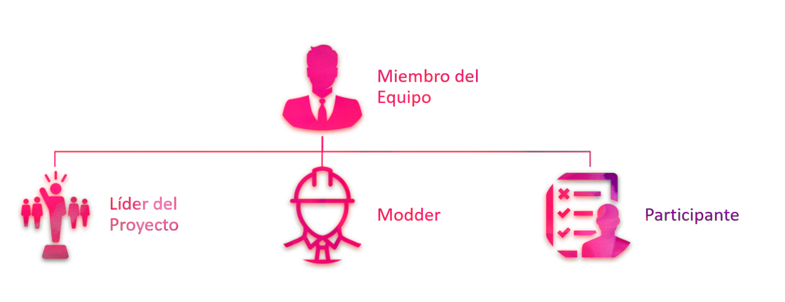

| Roles Presentes en Kross Modding Process |
 |
|
| Contents |
|---|
Roles presentes en Kross Modding Process Dentro del proceso, se identifican tres roles principales, los cuales a su vez desempeñan diferentes tareas en el proyecto: Lider del EquipoEl lider del equipo de modding es la persona encargada de dirigir las actividades del equipo para conseguir buenos resultados en el desarrollo del proyecto de modificación. Establece roles y responsabilidades, facilita documentación y herramientas a sus miembros, fija metodologías para el desarrollo y socializa conceptos sobre la idea de modificación. ModderEl modder es el encargado de generar los cambios en el software objeto de la extensión. Este miembro puede desempeñar uno o varios tipos de rol dependiendo de las habilidades y talentos que este posee. ParticipanteUn participante es una persona que desempeña un rol dentro del grupo de trabajo conforme a su talento y capacidades para aportar en el desarrollo del producto final. El rol que puede desempeñar un participante no es necesariamente de "Modder", ya que las aportaciones de un participante incluye otras actividades como feedback, divulgación en redes sociales, webmaster, entre otros. Algunos ejemplos de tipos de roles presentes en el modding, se pueden consultar aquí |